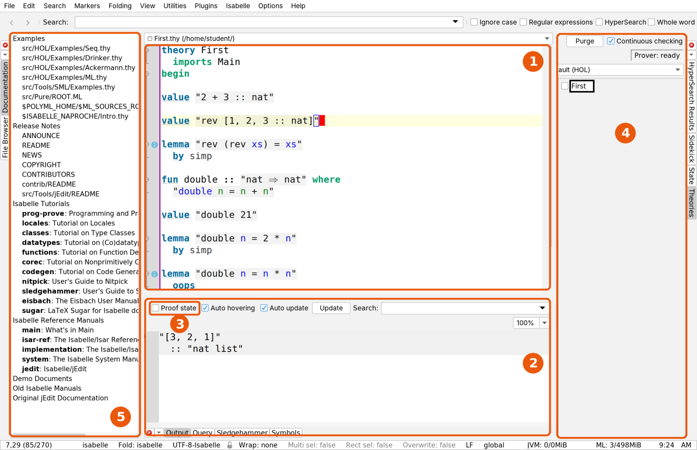
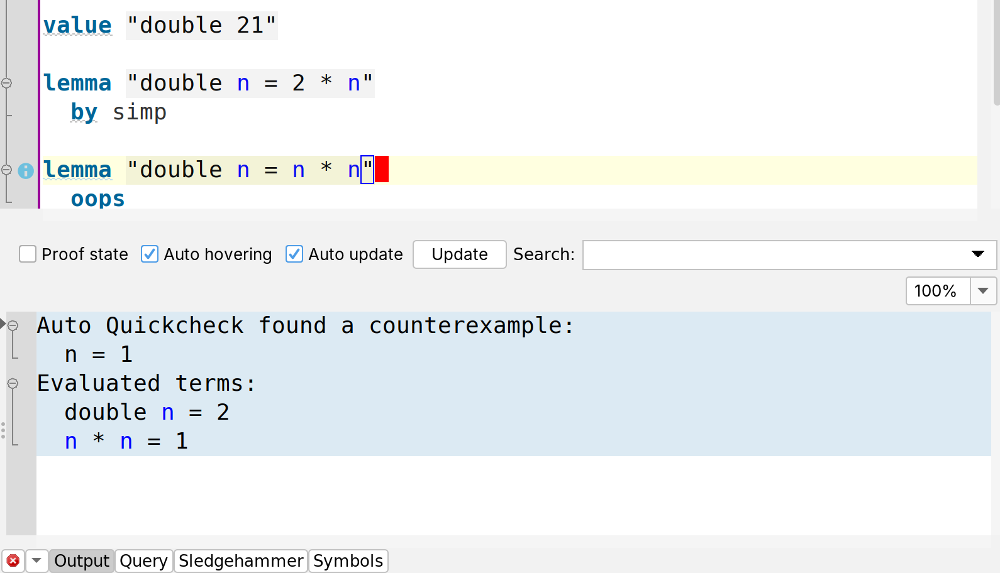

不能出错的软件
有些软件缺陷只让人烦恼。例如，应用崩溃，重启后损失几分钟的工作。但另一些软件控制飞机、放射剂量或列车运行，也可能负责转账或保护机密。在这些场景里，缺陷可能造成伤亡或巨额损失，事后发现为时已晚。下面三个有据可查的事故说明了风险有多大。
- 阿丽亚娜 5 号，1996 年。 首次发射后不到一分钟，火箭偏离轨道并解体。 惯性参考系统沿用了阿丽亚娜 4 号的软件，其中一段程序把 64 位浮点数转换为 16 位有符号整数。阿丽亚娜 5 号走的是不同轨迹，导致数值超出软件假定的范围。转换失败，使运行同一软件的主用和备用参考单元都关闭了。
- Therac-25，1985–1987 年。 一台放射治疗机让六名患者受到严重过量的照射，其中至少三人死亡。原因之一是控制软件中的竞态条件（race condition）：操作员如果快速修改治疗参数，就可能让机器处于致命的配置，而早先的型号是用硬件联锁装置来防止这种情况的。
- 奔腾处理器 FDIV 缺陷，1994 年。 英特尔的新处理器算错了某些除法，因为除法电路的查找表缺了几个条目。 英特尔为更换芯片和冲销存货计提了 4.75 亿美元的费用。算术电路也是形式化验证的一个应用领域。
这些系统都经过测试，但仍漏掉了缺陷。艾兹赫尔·迪杰斯特拉在《结构化程序设计札记》中概括道：“程序测试可以证明缺陷存在，却不能证明缺陷不存在。”通过选定用例的测试，无法确立程序在其他用例上也正确。
简单的算术说明了原因。接受两个 64 位整数的函数具有 ，约 种可能的输入。每秒测试十亿个，你需要约 年才能尝试完所有输入，这几乎是宇宙年龄的万亿倍。穷举测试对于某些小型有限问题是可行的，但对于此问题则不切实际。对于行为依赖于存储状态、时序或与其他程序交互的程序，需要覆盖的内容远不止输入值本身。
形式化方法提供了另一种证据。先用数学描述所要求的行为，再根据描述检验命题。证明可以确立性质对满足前提的所有输入都成立。模型检测器可以探索一个有限模型的所有可达状态。这些方法是测试的补充，也能用于工业规模的系统。
- seL4是一个操作系统微内核。2009 年，人们证明了它的 C 代码实现了它的规约，证明由Isabelle/HOL（也就是本系列讲授的系统）进行机器检查。它是第一个拥有这种证明的通用内核。
- CompCert 是一个在证明辅助工具 Rocq（前身为 Coq）中证明正确的 C 编译器。2011 年， 研究人员使用随机生成的程序测试了 C 编译器，发现许多导致 GCC 和 LLVM 生成错误代码的 bug，但在 CompCert 的已验证部分中未发现任何 bug。他们在其未验证部分确实发现了 bug：证明的范围至关重要。
- 亚马逊云服务（Amazon Web Services）的工程师从 2011 年起就用 TLA+ 语言为 S3、DynamoDB 等系统编写规约，并用模型检测器检查它们。检测器找到了一些隐蔽的设计错误，其中一个需要 35 步的事件序列才能展示出来。
- 巴黎地铁 14 号线自 1998 年开通以来一直无人驾驶。它的安全关键软件是用 B 方法开发和证明的。
形式化方法耗费时间与专业知识。当故障代价高昂或交互难以测试时，它们尤为有用：航空电子、铁路、医疗设备、处理器、操作系统内核、编译器和密码协议。其应用也出现在保证指南中：DO-333 是航空电子软件指南 DO-178C 的形式化方法附录。选择方法仍取决于特定系统以及你需要确立的性质。
怎样才算“形式化”
日常语言常将细节留给语境。考虑学校软件的一项需求：“在打印前对成绩列表进行排序。”最高分在前还是最低分在前？假设我们同意最低分在前，且保留重复成绩。对于输入 [80, 55, 80]，预期输出为 [55, 80, 80]。
现在假设仅检查输出是否有序。[55, 80] 会通过该检查，尽管它丢失了分数；即使空列表也会通过，因为它没有无序对。对原始列表排序的要求已经隐含了保留其内容。我们的检查也必须表达这一要求。
形式化方法使用以下方法使此类要求显式化：
- 一种具有精确语法的形式语言，用于确定表达式的结构。
- 语义，即对这些表达式的含义和陈述何时为真的数学说明。
- 一种严格的检查方法，例如使用显式推理规则的证明，或穷举 探索有限模型。在证明系统中，推理规则指定了可以从哪些前提推导出哪些结论。
形式化方法（formal method）是用一种具有精确数学含义的语言来描述或验证系统的方法，这样关于系统的断言就可以通过计算或证明来检查，而且往往由计算机来检查。
令 命名输入列表， 命名输出列表。我们可以将所选要求表达为两个必须同时成立的条件：
将 ys 解读为升序排列，且在 ys 中每个分数出现的次数与在 xs 中相同。此处，表示分数从不递减：允许出现相等分数。符号表示“且”。多重集记录哪些元素出现以及每个元素出现的次数，同时忽略其顺序；将列表转换为其多重集。因此，[80, 55, 80]和[55, 80, 80]具有相同的多重集，但[55, 80]没有。
第一个条件检查顺序；第二个条件排除丢失、添加或重复分数。这些条件描述返回结果。要验证排序函数，我们必须对每个允许的输入确立这些条件，并确立函数返回。写出公式使我们的选择显式化；它不替我们选择要求，也不阻止我们省略其中任何一个。模块 2 和 3 详细介绍逻辑符号，模块 12 根据这些条件验证排序函数。
规约描述系统应具备的行为。形式化规约用数学含义精确的语言表达这些行为。实现方式仍可自行选择。例如，排序规约规定了结果应当怎样，却没有指定排序算法。
验证（verification）表明一个实现满足它的规约。确认（validation）检查规约描述的是否正是真正想要的东西。巴里·玻姆（Barry Boehm）的概括是：验证问的是“我们是否在正确地构建产品？”，确认问的是“我们构建的是否是正确的产品？”。
形式化方法位于需求与程序之间。确认把需求和规约联系起来；验证把规约和实现联系起来。
测试通过说明该用例得到了预期结果。一般命题的证明则能涵盖所有满足假设的输入。命题必须准确表达所需的行为。例如，只证明结果有序仍无法发现成绩丢失，因此还需要确认规约本身是否正确。
听到“已经验证”时，可以追问两件事：证明了什么性质？用了哪些假设？源代码的证明可能依赖于编程语言模型、编译的正确性，以及对硬件和运行环境的假设。证明检查也依赖于可信计算基（trusted computing base），即必须正确工作才能保证检查结果可靠的软件与硬件。始终分别判断证明是否有效、已证命题是否适用于实际运行的系统。
形式化方法全景
形式化方法有多种。它们所能表达的性质、自动化程度和给出的结果各不相同。测试既可作为比较的参照，也能补充形式化验证。
| 方法 | 你提供什么 | 检查什么，给出什么结果 | 局限 | 示例 |
|---|---|---|---|---|
| 测试 | 输入与预期结果或性质 | 运行程序；报告所尝试用例中的失败情况 | 未测试的情况仍然存在；穷尽测试通常不切实际 | 单元测试；基于属性的测试（QuickCheck、Hypothesis） |
| 模型检测 | 系统的一个模型与一个性质 | 对于有限状态检查，探索可达状态；报告性质成立或给出反例轨迹 | 状态过多会耗尽时间或内存；有限模型可能仅覆盖选定的系统规模 | SPIN、NuSMV、TLA+ 的 TLC、UPPAAL |
| SAT 求解 | 由布尔变量和逻辑联结词构成的公式 | 找到一个使公式为真的赋值，或证明不存在这样的赋值 | 可判定的，但大型实例可能因求解成本过高而不可行 | MiniSat、CaDiCaL |
| SMT 求解 | 使用算术、数组或位向量等理论的形式化规约 | 搜索使公式为真的值，或证明其不存在 | 部分支持的片段是可判定的；其他片段则不是。求解器可能报告“unknown”或达到资源限制 | Z3, cvc5 |
| 交互式定理证明 | 定义、声明与证明指令 | 检查所陈述主张的证明，该证明可能涵盖无穷多个情况 | 表达性声明通常需要人类指导；证明的找到并不保证 | Isabelle, Rocq, Lean, HOL4, ACL2 |
SAT 是可判定的，这意味着存在一种算法能对任意实例给出正确的是非答案，但运行时间可能很长。不可判定意味着不存在能正确处理所有实例的这类算法。对求解器而言，可满足表示存在某种赋值使公式为真，不可满足表示不存在这样的赋值。一种验证方法是让求解器寻找使实现违反规约的输入。若找到满足赋值，它就是反例。若不可满足，则在所编码的模型中没有这一类反例。
表中可以看出两点。第一，表达能力与自动化程度之间存在权衡。SAT 求解可自动完成，也可判定，但有些实例仍可能很慢。定理证明器能表述适用于任意大小程序的编译器正确性命题，但在证明时可能需要你的指导。第二，这些方法可以配合使用。Dafny 和 Frama-C 的 WP 插件等程序验证工具可以生成证明义务，交给 SMT 求解器处理。Isabelle 自带测试工具Quickcheck、使用 SAT 求解器的反例工具Nitpick，以及能调用自动证明器和 Z3、cvc5 等 SMT 求解器的Sledgehammer。后者找到的证明与其他证明一样，由同一个小型内核检查（第 1.4 节）。
不存在一种算法总能判定任意程序在任意输入上是否停机：这就是停机问题，由 Alan Turing 证明为不可判定。表达力强的验证问题可以编码此问题，因此不可能存在总能正确解决所有此类问题的验证器。这并不妨碍自动工具解决许多有用案例。人类指导可辅助特定证明，但不会消除一般限制。Module 3 重新探讨可判定性。
证明助手，以及为什么可以信任它们
证明助手（proof assistant），又称交互式定理证明器，是一种程序：它检查用形式逻辑写成的证明，并帮助你找到证明。可以把它想象成一位同事，他会读你证明的每一行，从不疲倦，也从不放过任何漏洞；身边还有一队助手，能帮你补上常规的步骤。
但证明助手本身是一个大型程序。为何信任其证明检查？一种回答是 Robin Milner 及其同事在 1970 年代为 Edinburgh LCF 系统（Logic for Computable Functions）开发的架构，该架构被 Isabelle 及许多其他证明器所使用。
在 LCF-style证明器中，定理是抽象类型 thm 的值。证明工具无法直接构造这些值，必须使用由kernel 提供的操作，后者实现推理规则并跟踪定理所依赖的假设。
LCF 架构。证明工具通过内核的操作构造定理。该保证依赖于正确性规则与假设，以及正确运行的实现。
对于通过这些操作构建的普通证明，证明搜索工具中的错误可能导致证明失败或永远运行，但它无法绕过内核的推理规则。这将逻辑检查集中在系统的一个小得多的部分。这并不意味着字面上只有内核必须工作：逻辑的公理、ML 运行时和硬件也很重要。Milner 及其同事开发了用于编写证明工具的 ML（“元语言”）；Isabelle 使用 ML 和 Scala。
Isabelle 亦允许显式公理、被接纳的证明（sorry）以及 oracles，这些接口接受结果而无需通过常规推理规则进行推导；它们引入了额外的信任，但 LCF 架构并不使它们的主张为真。本系列证明使用标准逻辑与库，不添加公理或使用被接纳的步骤或外部 oracle 证明方法。特别是，Sledgehammer 的外部结果在计为定理前必须重构为 Isabelle 证明。
劳伦斯·保尔森于 1986 年在剑桥大学启动了Isabelle。它最初是一个通用证明助手，可以在同一个框架中定义多种逻辑。慕尼黑工业大学的托比亚斯·尼普科及其团队开发了如今最常用的Isabelle/HOL。马卡里乌斯·文策尔创建了 Isar 证明语言和 Isabelle/jEdit 证明开发环境。HOL 是高阶逻辑，是一种有类型的逻辑。在其中，函数可作为其他函数的参数，变元也可以取函数为值。它既能表述数学命题，也能定义函数式程序。本系列使用 Isabelle/HOL，下文简称 Isabelle。
Isabelle/HOL 曾用于 seL4 的证明、开普勒猜想证明的一部分（与 HOL Light 一起），以及形式化证明档案库（Archive of Formal Proofs）中的数百个项目——这是一个在线的、经过检查的 Isabelle 证明库。你可能还会遇到的其他证明助手有 Rocq（原名 Coq）、Lean、HOL4 和 ACL2。它们的逻辑和风格各不相同，但本系列中的思想同样适用于它们。
安装 Isabelle2026
本系列使用2026年10月发布的Isabelle2026。应用包包含Isabelle/jEdit编辑器、Java、预构建的HOL逻辑、自动证明器和手册。跟随本系列无需单独安装Java或LaTeX。Isabelle的主页建议小型实验需要4 GB内存和2个处理器核心，中型应用需要8 GB和4个核心；本系列保持轻量。
从Isabelle 官网下载安装包，选择与自己系统对应的版本，再按下列步骤操作。系统要求及更多排查方法可查阅官方安装说明。
- 下载 Isabelle2026.exe（适用于 Windows 10 或 11）并运行它。这是一个自解压文件：选择一个文件夹来解压，例如你的用户主文件夹。
- Isabelle 没有注册开发者的签名，所以 Windows 一开始会拒绝运行它。如果出现一个蓝色窗口，显示“Windows 已保护你的电脑”（Windows protected your PC），先点击更多信息（More info），再点击仍要运行（Run anyway）。
- 安装程序结束后会启动 Isabelle/jEdit，并创建一个桌面快捷方式。以后就用这个快捷方式启动。
- 下载适合你的 Mac 的版本：Apple 芯片（M1 及以后）选 macOS (ARM)，否则选 macOS (Intel)。如果浏览器没有自动解压，就先解压，然后把 Isabelle2026.app移到应用程序（Applications）文件夹。
- Isabelle 没有注册开发者的签名，所以 macOS 一开始会阻止它。打开 Isabelle2026.app，在安全对话框中点击取消（Cancel）。
- 打开系统设置 → 隐私与安全性（System Settings → Privacy & Security）。在靠近底部的地方，有一条消息说 Isabelle2026 已被阻止；点击仍要打开（Open Anyway）并确认。之后 Isabelle 就能像其他应用一样启动了。
-
下载 Isabelle2026_linux.tar.gz（ARM 电脑则下载 Linux (ARM) 版本），解压到任意位置：
$ tar -xzf Isabelle2026_linux.tar.gz -
启动 Isabelle/jEdit：
$ Isabelle2026/Isabelle2026你需要一个图形桌面环境。命令行工具在
Isabelle2026/bin/isabelle；本系列用不到它们。
在首次启动时，Isabelle/jEdit 会在你的主目录中打开一个名为 Scratch.thy 的 scratch theory。等待右侧的 Theories面板显示Prover: ready，此时 Isabelle 已加载 HOL 并准备好检查你输入的内容。
如果出了问题
- Windows: Sledgehammer 或
smt报告证明器运行失败。 Windows Defender 可能阻止 Isabelle 的外部证明器。Isabelle 的安装页面建议在 Virus & threat protection 中排除整个 Isabelle 文件夹。如果遇到此问题，请遵循官方安装建议；本模块的示例无需使用任何工具。 - macOS：没有“仍要打开”按钮。 只有在你尝试打开过一次该应用之后，这个按钮才会出现。再打开一次 Isabelle2026.app，点击“取消”，然后再到“隐私与安全性”里找。
- Isabelle 非常慢，或者因内存不足而停止。 关闭其他占用内存大的程序。Isabelle 需要上面所说的内存。
Isabelle/jEdit 导览
你现在打开的这个窗口 Isabelle/jEdit 是一个证明器集成开发环境（prover IDE）：在你输入的同时，Isabelle 就在持续检查编辑器中的文本。这里没有“运行”按钮。图 1.3 展示了这个窗口，里面是你马上要写的理论。

Isabelle/jEdit，Isabelle2026 在 Linux 上。相同的编辑器和面板在 Windows 和 macOS 上也可用；其外观和键盘快捷键可能不同。
- 文本区，你在这里编写理论。命令按种类着色，左侧的边栏用图标显示消息：蓝色的 i表示信息，红色的! 表示错误。
- Output（输出）面板显示光标所在命令的消息。它一开始是关闭的：点击窗口底部的 Output 标签即可打开。
- Proof state（证明状态）。把这个框勾选一次。之后 Isabelle 会在 Output 面板中显示光标处还剩下什么需要证明。这个设置在以后的会话中会被记住。
- Theories面板显示Prover: ready 以及每个已打开理论的进度。
- Documentation（文档）面板列出 Isabelle 自带的手册。最有用的是 prog-prove，即《Programming and Proving in Isabelle/HOL》，本系列第三部分就以它为线索。
从一开始就养成几个习惯会很有帮助。把鼠标悬停在带下划线的文字上，可以看到它的消息。按住 Ctrl（macOS 上是 Cmd）并把鼠标悬停在一个名字上，可以看到它的类型和定义；点击则跳转过去。要输入数学符号，就输入下表中的缩写：Isabelle 会把它替换成符号，要么立即替换，要么弹出一个小窗口，在其中按 Tab 确认。你也可以输入反斜杠加符号的名字，例如 \forall，或者在底部的 Symbols（符号）面板中点击符号。
| 符号 | 输入 | 含义 |
|---|---|---|
| ⇒ | => |
函数类型 |
| ∧ | /\ 或 & |
并且 |
| ∨ | \/ 或 | |
或者 |
| ¬ | ~ |
非 |
| ⟶ | --> |
蕴涵 |
| ⟷ | <--> |
当且仅当 |
| ∀ | \forall |
对所有 |
| ∃ | \exists |
存在 |
| ≠ | ~= |
不等于 |
| ≤ | <= |
小于或等于 |
复制也可以：这些页面上的 Isabelle 文本使用和 Isabelle 相同的 Unicode 符号，所以你可以用代码块的复制按钮复制，再粘贴到 Isabelle/jEdit 中。
你的第一个理论
你在 Isabelle 中写的所有东西都放在一个理论（theory）里：理论是一个包含定义、陈述和证明的文件，就像编程语言中的一个模块。现在你将一步一步写出一个理论，并接触 Isabelle 的三种基本活动：计算、证明和反驳。
创建文件
在 Isabelle/jEdit 中选择 File → New（文件 → 新建），然后选择 File → Save As…（文件 → 另存为）。为本系列建一个文件夹，例如主文件夹中的 isabelle，把文件保存在那里，命名为 First.thy。然后输入：
theory First
imports Main
begin
endtheory First 给理论命名，这个名字必须与文件名一致：理论 First 要放在 First.thy 中。imports Main 引入标准库：数、列表、集合，以及关于它们的成千上万条已经证明的事实。其余所有内容都写在 begin 和 end 之间。下面的命令都写在 end 之前的新行上。
如果出了问题
如果 Isabelle 在 First 下面画了下划线，并且提示
Bad theory name "First" for file "Scratch.thy"⌂
这条消息的意思是：对文件“Scratch.thy”来说，理论名“First”不正确。也就是说，理论名和文件名不一致。把文件另存为 First.thy，或者把 theory 后面的名字改成与文件名一致。
计算
输入这一行：
value "2 + 3 :: nat"把光标放在这一行上。Output 面板会显示结果和它的类型：
"5"
:: "nat"value评估一个项。引号内的文本属于Isabelle的内语法，即项和类型的语言；value和lemma等命令属于外语法，位于引号之外。:: nat是一个类型注解：它将2 + 3的类型固定为自然数0, 1, 2, …。Isabelle支持多种类型上的数值和加法。若缺乏足够的上下文以选择具体类型，该表达式保持多态，意味着其类型仍为通用类型，且value无法将其评估为具体数值。其他表达式可以从上下文中获取类型，无需注解。
Isabelle 能计算的不只是数。rev 把一个列表反转：
value "rev [1, 2, 3 :: nat]""[3, 2, 1]"
:: "nat list"如果出了问题
如果去掉类型，Isabelle 会拒绝：
value "2 + 2"Wellsortedness error:
Type 'a not of sort term_of
Cannot derive subsort relation numeral < term_of这条消息很难懂，但解决办法很简单：加上类型标注，例如 :: nat 或 :: int。你会在模块 8 学习如何读懂这类消息。
证明
现在来看一个关于所有列表的断言：把一个列表反转两次，会得到原来的列表。输入这个陈述：
lemma "rev (rev xs) = xs"变量 xs 没有在任何地方定义过。Isabelle 把它看作代表任意列表，所以这条引理断言该等式对每个列表都成立。勾选了 Proof state之后，Output 面板会显示目标（goal），即仍有待证明的陈述：
proof (prove)
goal (1 subgoal):
1. rev (rev xs) = xs现在来证明它。在下一行输入：
by simp一旦检查无误，证明即被接受。simp是simplifier，它利用已知等式和逻辑规则简化目标。此处成功是因为库中包含rev (rev xs) = xs的事实。Isabelle/jEdit 甚至提示您：引理旁侧栏中的蓝色i携带消息“Auto solve_direct: 当前目标可直接通过 List.rev_rev_ident 解决”。在幕后，simp通过调用内核规则构建了该定理，正如第 1.4 节所述。
定义与证明
现在定义一个你自己的函数。fun 用等式来定义函数：
fun double :: "nat ⇒ nat" where
"double n = n + n"consts
double :: "nat ⇒ nat"
Found termination order: "{}"double :: "nat ⇒ nat" 声明 double 接受一个自然数并返回一个；键入 => 以获取 ⇒ 符号。where 之后的方程说明了 double 的计算内容。Isabelle 返回新常量及其类型，并报告它找到了一个终止序：对于每个使用 fun 定义的函数，Isabelle 证明该函数终止。此处没有递归，因此证明是平凡的；模块 5 和 8 解释了终止的重要性。无法通过终止检查的定义在此形式下不被 fun 接受。这是一个数学终止结果；它并不承诺实际机器对每个输入都有足够的时间或内存。现在尝试该函数：
value "double 21""42"
:: "nat"不过，一次测试只能展示一个值。下面是一个关于每个 n 的断言，以及它的证明：
lemma "double n = 2 * n"
by simp化简器使用 double 的定义等式（fun 会自动登记它）和算术定律。把光标放在引理那一行上就能看到目标，如图 1.4 所示。

勾选 Proof state 后，Output 面板显示光标处的目标。
反驳
如果一个断言是错的呢？试试这个：
lemma "double n = n * n"使用默认设置，在检查后该行旁边应出现蓝色i。将光标置于该行（图1.5）：Isabelle/jEdit 已使用Quickcheck自动对较小值尝试该声明，并找到了一个使其失败的例子。你也可以自行运行 Quickcheck，这也是本系列理论文件所做的事情：
quickcheckTesting conjecture with Quickcheck-exhaustive...
Quickcheck found a counterexample:
n = 1
Evaluated terms:
double n = 2
n * n = 1
默认情况下，Isabelle/jEdit 会在新引理上自动尝试 Quickcheck。此处它报告 n = 1: double 1 为 2，但 1 * 1 为 1。
注意该论断对 n = 0 和 n = 2 成立。仅尝试这两个值的测试者会遗漏错误。此处使用的穷举 Quickcheck 测试者系统地尝试小值，这就是它找到 n = 1 的原因。如果在搜索范围内未找到反例，该论断仍未得证。找到一个反例足以反驳全称论断；未找到一个反例不足以证明它。
该引理在自然数上为假，因此从标准假设出发不存在可靠的证明。使用 oops 完成它，该操作在不将声明记录为已证定理的情况下放弃证明。
oops如果你还是试了 by simp 会怎样？证明会失败，Isabelle 会显示它没能证明的东西：
lemma "double n = n * n"
by simpFailed to finish proof⌂:
goal (1 subgoal):
1. n + n = n * n化简器展开了 double，但未能完成剩下的证明目标。这里的原因是 n + n = n * n 在 n = 1 时为假。单凭 simp 失败无法说明命题为假，真的命题也可能需要其他证明。Isabelle/jEdit 会用三种方式提示失败：边栏中的红色 !、by simp 下方的红色下划线，以及 Output 面板中的消息（图 1.6）。消息中的 ⌂ 指它对应的文本位置，在 Isabelle/jEdit 中可以点击跳转。用 oops 替换 by simp 后，错误就会消失。

一次失败的证明。错误附在失败的命令上，并显示剩下的目标。它上面那行 theorem double ?n = ?n * ?n 并不表示证明成功了：Isabelle/jEdit 并行地检查证明，在证明完成之前就先记下了陈述。红色的消息才是关键。
你现在已看到在 Isabelle 中贯穿本系列你将做的三件事：使用value进行计算，使用lemma … by …进行证明，以及使用Quickcheck搜索反例。一般声明的完整证明涵盖该声明中的所有情况。反例则反驳它。此处展示的value和 Quickcheck 结果是计算结果，而非内核检查的证明。
用 File → Save（文件 → 保存）保存这个理论（Ctrl+S，macOS 上是 Cmd+S）。
本系列的学习方式
本系列分为四个部分：
| 部分 | 模块 | 你会学到什么 |
|---|---|---|
| 一、基础 | 1–5 | 形式化方法；命题逻辑和谓词逻辑；集合、关系和函数；归纳与递归 |
| 二、形式化证明 | 6–7 | 什么是证明；纸上的和 Isabelle 中的自然演绎 |
| 三、Isabelle/HOL 实践 | 8–11 | HOL 中的函数式编程；证明自动化；Isar 结构化证明；深入归纳 |
| 四、验证 | 12–14 | 验证函数式程序；用状态机和不变式为系统建模；一个经过验证的编译器 |
第一部分主要是纸上的数学，每个想法都包含一个定义、一个工作示例，以及一个在 Isabelle 中检查框，在其中计算示例、测试声明或检查证明。模块 6 在纸上进行证明；从模块 7 开始，Isabelle 占据主导。数学基础系列涵盖逻辑、集合和通用计算的证明，并提供更多练习；该系列从这些主题中提取形式化方法所需的内容，并进一步探讨机器检查的证明。
每一页上：
- 定义、例和事实框都有编号，方便后面的模块引用。
- Isabelle 文本以 Isabelle 自身的字体显示，并带有 Copy 按钮。下方显示的每个输出块 由 Isabelle2026 在前面各代码块提供的上下文中运行相应文本产生。若你的屏幕显示不同，请检查文本、前面的命令、Isabelle 版本和设置。反例及证明器搜索等消息可能因运行而异。标有示例运行的输出展示其中一次运行。标有故意失败的代码块特意展示错误。
- 练习分为三个层次：★ 检查理解，★★ 运用所学，★★★ 挑战自我。每道练习都有完整的解答，默认折叠；先自己做，再看解答。每个解答中的 Isabelle 内容都经过了 Isabelle 的检查。
- 每个模块末尾有一组简短的自测题，检查主要概念。
本系列的所有 Isabelle 文本也打包在一个下载文件 formal-methods-theories.zip 中：每个模块有一个理论 Module_NN.thy，以及包含该模块练习解答的 Module_NN_Solutions.thy。解压后，在 Isabelle/jEdit 中打开任意一个理论，就能重放对应的模块。
每个模块连同练习需要两到四个小时。请按顺序学习：每个模块都要用到前面的模块。如果卡住了，问题排查页面列出了 Isabelle 的常见消息及其原因；Isabelle 社区也会在 isabelle-users 邮件列表和 Zulip 聊天室中回答问题。
小结
- 抽样测试通过，仍可能在未经测试的情形中出现故障。穷尽测试可以覆盖 小有限域，但这通常不切实际。形式化验证在数学模型及其假设所覆盖的案例中检查声明的性质。
- 形式化方法使用形式语言、语义和严格检查，例如 证明系统或有限状态模型探索。
- 规约说明系统必须做什么。验证表明实现满足规约；确认检查规约是否正是想要的东西。
- 测试、模型检测、SAT 与 SMT 求解以及交互式定理证明在表达力和自动化之间各有取舍；Isabelle 把定理证明器和自动化工具结合在一起。
- 在如 Isabelle 这样的 LCF 风格证明器中，证明工具通过内核 构建定理。 这保护了普通证明免受证明搜索错误的影响，假设规则与假设是可靠的，且可信计算基运行正确。公理、许可和预言机需要单独审查。
- 一个 Isabelle 理论
T存在于文件T.thy中，并声明其导入的理论；我们的 第一个理论导入Main。其主体位于begin和end之间。value进行计算，lemma … by simp尝试证明，quickcheck搜索反例，而oops放弃证明。失败的证明尝试或无结果的反例搜索均不能确立论断。
练习
对下面每项活动，说明它是验证还是确认，并说明理由。
- 向客户展示一个列车时刻表系统的规约对下周的列车意味着什么，并问“这是你的意思吗？”。
- 在 Isabelle 中证明排序函数始终返回包含相同元素的已排序列表， 每个出现次数相同。
- 发现“对成绩排序”本应写成“最高分排在最前面”。
- 运行模型检测器，表明一个协议设计的任何可达状态都不违反它的安全性质。
查看解答
- 确认：它检查规约描述的是否是客户想要的东西。
- 验证：它表明实现满足它的规约。
- 确认：它修正的是规约本身。
- 验证：表明设计满足既定性质。（将设计与 属性。模型是否表示预期系统以及属性是否正确是验证问题。）
对于下面每项任务，第 1.3 节表格中的哪种方法最合适？
- 检查一个 32 位乘法器电路在每一对输入上都与参考设计一致。
- 检查一个包含三个处理器的缓存协议的有限状态模型，其存储容量有界，并 消息队列，以证明两个处理器永远不会同时拥有同一地址的写权限。
- 证明一个排序函数对任意长度的列表都正确。
- 给一个解析器输入成千上万个随机输入，快速找出错误。
查看解答
- SAT 或 SMT 求解是此类等价性检查 的标准方法。询问是否 任何一对固定大小的输入都会使电路产生分歧。不可满足的结果确立了电路模型中的一致性。大型乘法器仍然可能是困难的求解器实例。
- 模型检测。 所述界限使这成为一个有限状态问题。检查一个三处理器 模型本身并不能为任意数量的处理器确立正确性。
- 交互式定理证明 适用于无界列表长度。归纳法是证明性质、不变式、可达性、精化、形式化规约、化简、赋值、合一、本征变元、条件、量词、否定对应关系的标准方法，且必须把每个占位符原样保留一次，不能增加、漏掉或混淆。 证明此类主张；Module 5 和 Part III 教授此内容。某些验证工具也能自动化特定的归纳证明。
- 测试，具体来说是随机测试。若对输入检查的是 陈述性质。你需要一种识别失败的方法，例如崩溃、拒绝有效输入或与参考解析器不一致。仅靠随机输入无法告诉你输出是否正确。
一个函数接受三个 32 位整数。它有多少种不同的输入？如果每秒测试 个，全部测完需要多长时间？取一年约为 秒。
查看解答
共有 种输入。每秒测试 个，需要约 秒，即 年，大约 2.5 万亿年。
在你的理论中加入一个函数 triple :: "nat ⇒ nat"，满足 triple n = n + n + n。用 value 计算 triple 14。然后用 by simp 证明两条引理：triple n = 3 * n 和 triple n = double n + n。
查看解答
fun triple :: "nat ⇒ nat" where
"triple n = n + n + n"
value "triple 14""42"
:: "nat"lemma "triple n = 3 * n"
by simp
lemma "triple n = double n + n"
by simp两个证明都能成功，因为 simp 会展开 triple 和 double 的定义，然后完成算术运算。
在 Isabelle 中，xs @ ys 把两个列表连接起来：[1, 2] @ [3] 是 [1, 2, 3]。有人断言 rev (xs @ ys) = rev xs @ rev ys。用 quickcheck 检验这个断言。读懂反例，推出正确的定律应该是什么，并用 by simp 证明它。
查看解答
lemma "rev (xs @ ys) = rev xs @ rev ys"
quickcheck
oopsTesting conjecture with Quickcheck-exhaustive...
Quickcheck found a counterexample:
xs = [a2]
ys = [a1]
Evaluated terms:
rev (xs @ ys) = [a1, a2]
rev xs @ rev ys = [a2, a1]当每个列表各有一个元素时，rev (xs @ ys) 把 ys 的元素放在前面，而 rev xs @ rev ys 保持原来的顺序。反转一个连接起来的列表时，各部分的顺序也要反过来：
lemma "rev (xs @ ys) = rev ys @ rev xs"
by simpQuickcheck 把这两个元素叫做 a₁ 和 a₂：它们是某个未知元素类型中的两个不同的值。
Isabelle 接受了你的证明：某个 C 函数满足它的规约。请列出至少四种在真实计算机上运行时仍可能导致这个函数行为异常的情况。
查看解答
下面任何一种都有可能，此外还有其他情况：
- 规约错误或不完整：它没有说出真正想要的东西（确认失败）。
- 证明中使用的 C 语言模型与 C 标准或编译器的实际行为不同，例如在整数溢出或内存布局方面。
- 编译器存在缺陷，生成的机器码与 C 代码不匹配。一个编译器 正确性证明，如 CompCert 中所示，可在其范围内降低此担忧；未验证的前端代码、汇编和链接仍可能重要。
- 硬件有故障，或者行为与其文档不同。
- 定理的假设在实际中不成立，例如假设调用者传入的是有效指针，或者假设没有其他线程修改数据。
- 证明检查基础设施是不健全的或发生故障的：例如，内核存在错误， 不一致的已添加公理、未经证实的预言机结果，或影响检查的运行时或硬件故障。经过严格审查的小型内核可降低此风险，但无法完全消除。
假设 Isabelle 化简器（位于内核之外）存在一个 bug，使其在没有定理支持的情况下尝试将 (0 :: nat) 重写为 1。你试图通过 simp 证明假命题 (0 :: nat) = 1。假设内核、逻辑和运行时是可靠的，且未添加任何公理或预言机。化简器能否返回一个被接受的该命题的证明？解释为什么 LCF 架构至关重要。
查看解答
No. 在 LCF 风格的证明器中，化简器必须通过内核操作构造原始目标的定理，仅替换其工作数据中的文本是不够的，从 0 到 1 的证明生成重写需要一个证明该等式的定理，而所述假设下的自然数无法由健全规则提供。
症状的具体表现取决于 bug：化简器可能失败、抛出错误、陷入循环或返回无关定理。它不能返回证明错误原始目标的内核定理。Isabelle 还检查证明方法的结果是否确立了其被要求证明的目标。这就是为什么证明搜索中的错误不一定成为已接受证明中的错误。
自测题
value "2 + 3 :: nat" 中的类型标注？2这样的数值存在于许多类型中（自然数、整数、实数等）。类型注解选择一个；在其他表达式中，上下文可能已经确定了类型。oops 放弃它。